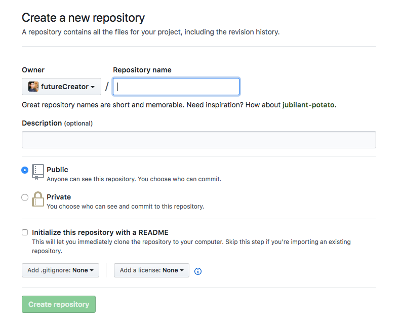

Hexo 배포 원리와 백업하기
Hexo 블로그는 잘 쓰고 계신가요? 예전에 한 분께서 이런 질문을 올려주셨습니다.
컴퓨터를 포맷했는데 hexo 블로그를 따로 백업해놓지 않았습니다. GitHub 에 올려놨으니 다시 받으면 살릴 수 있을까요?
저 또한 작성해주신 분과 마찬가지로 따로 백업해놓지 않았고, 막연하게 GitHub 리파지토리에서 다시 받으면 될 거라고 생각했습니다. 그런데 나중에야 알게 되었습니다. 리파지토리에 올라가는 건 public 폴더라는 것을 말이죠.
Hexo Deployment
제가 2016년 처음 Hexo 블로그를 시작하면서 작성한 포스트를 보면 GitHub에 새로운 리파지토리를 만들고, hexo generate를 이용해서 빌드를 한 후에 Github Pages 를 이용해서 호스팅하는 과정이 나옵니다. _config.yml 항목에 git repository 주소를 지정하면서 이 소스가 올라가는 거라고 생각했지만 그건 착각이었습니다.
과정을 한 번 살펴보겠습니다. hexo generate 라는 명령어로 빌드를 하면, Hexo 의 각종 템플릿과 우리가 작성한 .md 파일을 가지고 웹 사이트(html, css, javascript 등)를 만들어줍니다. 이런 프레임워크를 정적 사이트 생성기(Static Site Generator)라고 하는데 Hexo 외에도 많은 서비스들이 있습니다. 그리고 이렇게 나온 결과물은 public 폴더에 떨어지고, hexo-deployer-git 플러그인을 이용해서 리파지토리에 public 폴더의 내용을 배포합니다. 그러면 github pages 를 통해 github.io 도메인으로 웹 사이트를 볼 수 있게 됩니다.
문제는 내가 작성한 마크다운 파일, 수정한 템플릿과 설정 파일 그리고 테마는 따로 저장되는 곳이 없다는 겁니다. 이번 포스팅에서는 현재 사용하고 있는 블로그를 백업하는 방법에 대해 알아보겠습니다.
Repository 선택하기
여기서 말하는 리파지토리(저장소)는 github pages 를 이용해 배포하는 리파지토리가 아닌 코드 자체를 백업하기 위한 저장소입니다.
가장 먼저 사용할 수 있는 것은 Github 입니다. 대부분 github 를 이용해서 배포하고 계실거구요. 배포 폴더야 퍼블릭이라도 상관없습니다만, 각종 템플릿과 마크다운 파일은 공개하기 꺼려지실 수도 있습니다. GitHub 에서는 프라이빗 리파지토리는 유료입니다. 무료로 프라이빗 리파지토리를 사용하고 싶다면 Gitlab 이 있습니다. 오픈 소스라면 많은 개발자들이 있는 GitHub 가 유리하겠지만, 오픈 소스가 아닌 이상 gitlab이 좋은 선택이 될 수 있습니다.
- Github : 공개 저장소 무료, 비공개 저장소 유료 / 사용자 많고 오픈소스 프로젝트에 유리
- Gitlab : 공개 저장소 무료, 비공개 저장소 유료 / 비공개 프로젝트에 유리 / CI,CD 지원
gitlab 또한 사용법은 github 와 다르지 않으니, 이 포스트에서 실습은 github 으로 진행되었습니다.
수정: GitHub에서 프라이빗 리자피토리를 무료로 전환했습니다(2019/01/07)[1] 이제 GitHub에서도 프라이빗 리파지토리를 얼마든지 사용 가능합니다.
새 저장소 생성하기
새 저장소는 총 2개가 필요합니다. 왜냐하면 테마 또한 따로 백업해야 하기 때문입니다. 저는 테마 이름인 ‘hueman’ 과 블로그 자료를 저장할 ‘blog’ 라는 이름으로 만들었습니다.

README.md 파일을 만들지 않고 다른 설정은 건드릴 필요 없이 완료합니다.
테마 백업하기
이미 git 으로 관리되고 있는 테마 폴더부터 백업하겠습니다.
보통 테마를 설치할 때 다음과 같은 명령어를 사용합니다.
1 | $ git clone https://github.com/ppoffice/hexo-theme-hueman.git themes/hueman |
이러한 명령어는 themes 내에 특정 테마 폴더로 저장소의 내용을 클론하는데, 문제는 이후에 이걸 백업하기가 애매합니다. 그래서 원격 저장소의 주소를 변경해준 후에 변경된 모든 사항을 올리도록 하겠습니다.
1 | # 원격 저장소 확인 |
Hexo 백업하기
이제 본격적으로 hexo 블로그를 백업해보겠습니다. hexo 폴더는 따로 git 으로 관리되고 있지 않기 때문에 초기화부터 시작합니다.
git 초기화하기
1 | # .gitignore 파일 만들기 |
서브모듈 Submodule 추가하기
원격 저장소로 푸시하기 전에 테마 폴더에 대해 생각해 볼 필요가 있습니다. 이미 테마 폴더는 따로 git 으로 관리되고 있습니다. git 안에 git 이 있는 경우에 submodule 로 관리하는 것이 좋습니다. 특히 나중에 원격 서버에서 빌드가 필요한 경우에는 서브모듈 추가가 필수입니다.
먼저 테마 폴더가 제대로 백업이 된 것을 확인하고 themes 내의 테마 폴더를 삭제합니다. 그리고 테마 폴더 내에서 git submodule 을 이용해서 서브모듈로 추가합니다.
1 | # 미리 올려둔 테마 리파지토리를 테마 폴더에 서브모듈로 추가한다 |
새로운 테마를 설치하실 때도 git clone 보다는 git submodule 을 이용해서 설치하시는 것이 좋습니다.
배포 Deployment 하기
이제 코드를 원격 저장소로 배포하면 됩니다. github 계정을 물으면 입력하면 됩니다.
1 | # 이제 브랜치를 원격 리파지토리에 올린다. |
사이트에서 코드가 잘 올라와 있는 것을 확인하면 이제 블로그 폴더가 날라가도 안심입니다. 😆
Hosting
오늘 해본 작업은 단순한 백업이기도 하지만, 원격 저장소에 있는 소스를 가지고 다양한 방법으로 호스팅할 수 있게 된 것입니다. 기존 방식대로 Github Pages 에서 github.io 도메인을 사용하실 수도 있고, Git으로 이력관리 하면서 CI/CD 툴을 이용해 배포할 수도 있습니다. 커스텀 도메인을 사용하신다면 github.io 보다 좋은 옵션이 많습니다. 다음 포스트부터는 다른 방법들을 차례대로 살펴보겠습니다.
Related Posts
- 1.https://github.blog/2019-01-07-new-year-new-github/ ↩